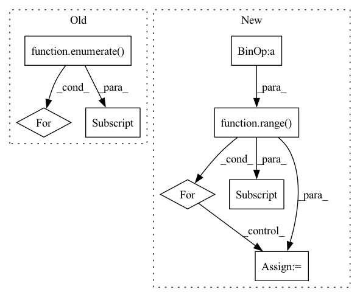

Pattern ID :6694
Before Change
return self.bottleneck(torch.cat(psp_outs, dim=1))
def forward(self, inputs: Tuple[Tensor, Tensor, Tensor, Tensor]) -> Tensor:
laterals = [lateral_conv(inputs[i] ) for i, lateral_conv in enumerate( self.lateral_convs) ]
laterals.append(self.psp_forward(inputs))
used_backbone_levels = len(laterals)
for i in range(used_backbone_levels-1, 0, -1):
laterals[i-1] += F.interpolate(laterals[i], size=laterals[i-1].shape[2:], mode="bilinear", align_corners=False)
fpn_outs = [self.fpn_convs[i](laterals[i]) for i in range(used_backbone_levels-1)]
fpn_outs.append(laterals[-1])After Change
f = self.ppm(features[-1])
fpn_features = [f]
for i in reversed(range( len(features)- 1) ):
feature = self.fpn_in[i](features[i] )
f = feature + F.interpolate(f, size=feature.shape[-2:], mode="bilinear", align_corners=False)
fpn_features.append(self.fpn_out[i](f))
fpn_features.reverse()In pattern: SUPERPATTERN
Frequency: 3
Non-data size: 8
Instances Fragment ID: 23011544
Project Name: sithu31296/semantic-segmentation
Commit Name: af9bcfd5c4642c42b0fa9e1b2af46eb45ec9063d
Time: 2021-08-27
Author: sithu31296@gmail.com
File Name: models/heads/upernet.py
M Class Name: UPerHead
N Class Name: UPerHead
M Method Name: forward(2)
N Method Name: forward(2)
M Parent Class: nn.Module
N Parent Class: nn.Module
M File Name: models/heads/upernet.py
N File Name: models/heads/upernet.py
M Start Line: 53
M End Line: 63
N Start Line: 44
N End Line: 53
Before Change
def forward(self, x: List[torch.Tensor]) -> List[torch.Tensor]:
// top-down
inters = [x[-1]] // P7in
for i, conv in enumerate( self.inter_convs):
out = F.interpolate(inters[-1], scale_factor=2., mode="nearest") // resize(P7td)
out = self.fuse([x[-2-i] , out]) // P6in + resize(P7td)
inters.append(conv(out)) // P6td = conv(P6in + resize(P7td))
// bottom-upAfter Change
// top-down
tds = [None] * self.num_levels
tds[-1] = x[-1]
for i in range( self.num_levels - 2, -1 , -1):
tds[i] = self.td_fuses[i]([x[i] , self.upsample(tds[i+1])]) // P6td = conv(P6in + resize(P7td))
// bottom-up
outs = [None] * self.num_levels Fragment ID: 23011541
Project Name: gau-nernst/vision-toolbox
Commit Name: 0844b6bcb142e63b09cf6ae44e5087c20d52c380
Time: 2022-04-10
Author: gau.nernst@yahoo.com.sg
File Name: vision_toolbox/necks.py
M Class Name: BiFPNLayer
N Class Name: BiFPNLayer
M Method Name: forward(2)
N Method Name: forward(2)
M Parent Class: nn.Module
N Parent Class: nn.Module
M File Name: vision_toolbox/necks.py
N File Name: vision_toolbox/necks.py
M Start Line: 163
M End Line: 180
N Start Line: 160
N End Line: 172
Before Change
clusters = {}
for idx, (_, _, vid_path) in enumerate( data) :
//print (vid_path, "cluster:", clustering_obj.labels_[idx])
cluster_label = clustering_obj.labels_[idx]
if cluster_label not in clusters:
clusters[cluster_label] = []
vid_label = vid_path.split(os.sep)[-2]
clusters[cluster_label].append(vid_label)
for idx, cluster in enumerate(clusters):
print(idx, ":", clusters[cluster])
if __name__ == "__main__":
After Change
n_clusters = len(set(labels)) - (1 if -1 in labels else 0)
start_cluster = -1 if -1 in labels else 0
cluster_to_data_idxs = {label: np.where(clustering_obj.labels_ == label)[0] for label in range( start_cluster, start_cluster + n_clusters) }
for cluster in cluster_to_data_idxs:
cur_cluster_vids = []
for data_idx in cluster_to_data_idxs[cluster]:
vid_path = data.data[data_idx] ["video"]
vid_label = vid_path.split(os.sep)[-2]
cur_cluster_vids.append(vid_label)
print(cluster, ":", cur_cluster_vids)
Fragment ID: 23011540
Project Name: rvl-lab-utoronto/video_similarity_search
Commit Name: 5bfd169a137512d725b4f9dade84dbcfa82cb2e0
Time: 2020-08-31
Author: salar77h@gmail.com
File Name: clustering/cluster_masks.py
M Class Name: AnonimousClass
N Class Name: AnonimousClass
M Method Name: cluster_embeddings(2)
N Method Name: cluster_embeddings(2)
M Parent Class:
N Parent Class:
M File Name: clustering/cluster_masks.py
N File Name: clustering/cluster_masks.py
M Start Line: 157
M End Line: 171
N Start Line: 163
N End Line: 177